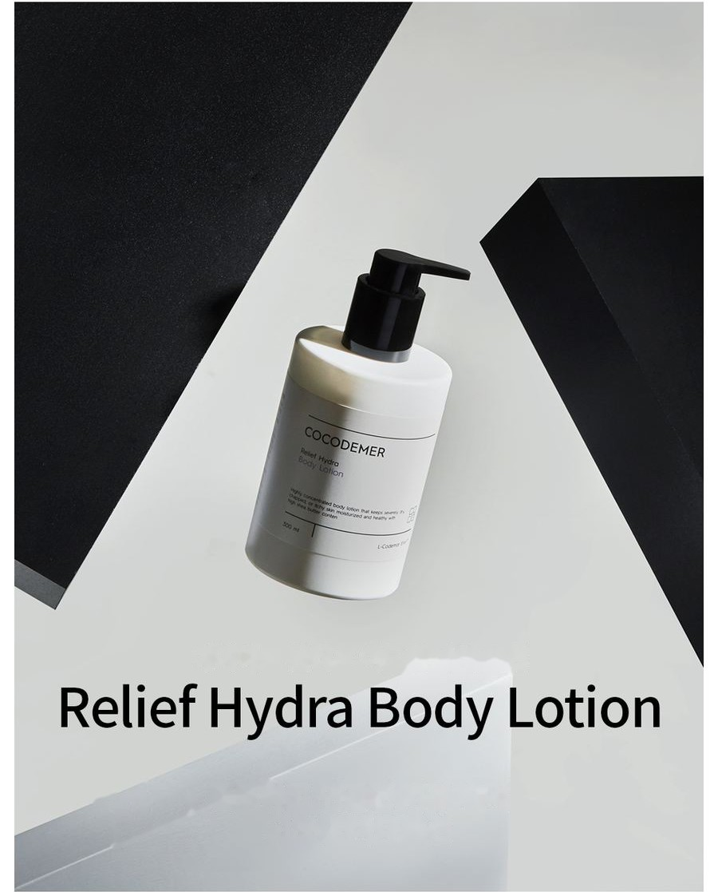
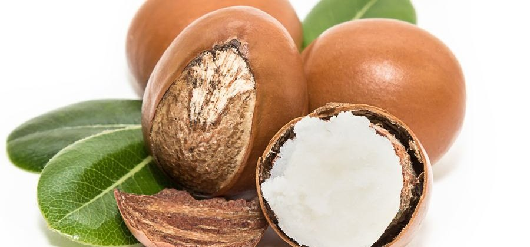

COCODEMER Relief Hydra Body Lotion
| Volume | 300ml |
|---|---|
| Suitable for | All skin types |
| Key technology | L-CODEMAR ELIXIR™ |
| Manufacturer · Responsible distributor | JUNGCOS CO., LTD. / COCODEMER CO., LTD. |
This product is not yet listed on the Smart Store. For purchases, please use the store, or contact us through the B2B inquiry.

A deeply hydrating body lotion for dry, sensitive skin
A deeply hydrating body lotion that soothes and replenishes sensitised skin
A veil of moisture formed by a range of hydrating ingredients keeps water loss to a minimum and holds hydration for longer.
A high concentration of shea butter cares for skin turned itchy and sensitive by dryness, leaving it more hydrated and healthier.
Ceramide NP, close in structure to the skin's own barrier components, helps strengthen a barrier that has broken down.

8% nourishing oils (argan kernel oil, green tea seed oil, sweet almond oil) and 8% water-soluble moisturising ingredients (coconut water, centella asiatica extract, fig extract, honey extract) are stabilised together. The result holds a high level of moisture and still spreads soft, with no stickiness.
On skin left rough by dryness, a high concentration of shea butter forms a moisture barrier that brings back a hydrated, healthy texture in a single use. Botanical ingredients such as Apple Mint Leaf Extract, Sage Leaf Extract and Rosemary Leaf Extract soothe and moisturise sensitive skin.
Key Active Code
- CaCentella Asiatica
- MoMoisturizing
- CnCeramide NP
- PnPanthenol
Shea butter, a moisturiser drawn from nature, at a high 11% — it eases dryness and itching, improves the skin's texture and fills it with moisture without irritation.
Ceramide NP, close in structure to the skin's own barrier components, helps strengthen a barrier that has broken down.
* The above describes the ingredients, not the finished product.
See the ingredient reference →
① L-CODEMAR ELIXIR™
COCODEMER's proprietary technology.
Our multi-layer nano-gel emulsion encapsulation technology holds the core actives — coconut water, phytosterols, 20 amino acids and honey extract — in a stable complex. That complex is then built into a skin-friendly liposomal form that mirrors the structure of skin itself, for the most efficient delivery into the skin.
L-Codemar Elixir™ strengthens the bonds between skin cells. It restores a damaged barrier and forms a strong protective film, so hydration holds for longer.


How To Use
- Turn the pump anticlockwise and press down.
- Take a suitable amount and massage it evenly over the body.
- Where needed, layer more onto dry areas, or wherever you would like the scent to linger.
A deeply hydrating body lotion that soothes and replenishes sensitised skin
A veil of moisture formed by a range of hydrating ingredients keeps water loss to a minimum and holds hydration for longer.
A high concentration of shea butter cares for skin turned itchy and sensitive by dryness, leaving it more hydrated and healthier.
Ceramide NP, close in structure to the skin's own barrier components, helps strengthen a barrier that has broken down.
8% nourishing oils (argan kernel oil, green tea seed oil, sweet almond oil) and 8% water-soluble moisturising ingredients (coconut water, centella asiatica extract, fig extract, honey extract) are stabilised together. The result holds a high level of moisture and still spreads soft, with no stickiness.
On skin left rough by dryness, a high concentration of shea butter forms a moisture barrier that brings back a hydrated, healthy texture in a single use. Botanical ingredients such as Apple Mint Leaf Extract, Sage Leaf Extract and Rosemary Leaf Extract soothe and moisturise sensitive skin.
Shea butter, a moisturiser drawn from nature, at a high 11% — it eases dryness and itching, improves the skin's texture and fills it with moisture without irritation.
Ceramide NP, close in structure to the skin's own barrier components, helps strengthen a barrier that has broken down.
* The above describes the ingredients, not the finished product.
① L-CODEMAR ELIXIR™
COCODEMER's proprietary technology. Our multi-layer nano-gel emulsion encapsulation technology holds the core actives — coconut water, phytosterols, 20 amino acids and honey extract — in a stable complex. That complex is then built into a skin-friendly liposomal form that mirrors the structure of skin itself, for the most efficient delivery into the skin. L-Codemar Elixir™ strengthens the bonds between skin cells. It restores a damaged barrier and forms a strong protective film, so hydration holds for longer.
① Turn the pump anticlockwise and press down. ② Take a suitable amount and massage it evenly over the body. ③ Where needed, layer more onto dry areas, or wherever you would like the scent to linger.
| Net volume or weight | 300ml |
|---|---|
| Suitable for | All skin types |
| Shelf life / period after opening | 30 months from date of manufacture; use within 12 months of opening |
| How to use | Dispense a suitable amount and massage evenly over the body. Reapply as needed to drier areas, or wherever you would like the scent to linger. |
| Cosmetics manufacturer | JUNGCOS CO., LTD. |
| Responsible distributor | COCODEMER CO., LTD. |
| Country of origin | Republic of Korea |
| Full ingredients (INCI) | Cocos Nucifera (Coconut) Water, Butyrospermum Parkii (Shea) Butter, Dimethicone, Glycerin, Methylpropanediol, Butylene Glycol, 1,2-Hexanediol, Polysorbate 60, Betaine, Cetearyl Alcohol, Cetyl Alcohol, Hydrogenated Poly(C6-14 Olefin), Triethylhexanoin, Fragrance (Parfum), Hydroxyethyl Acrylate/Sodium Acryloyldimethyl Taurate Copolymer, Ceteareth-25, Isopropyl Isostearate, Octyldodecyl Myristate, Honey Extract, Water, Glyceryl Stearate, PEG-100 Stearate, Centella Asiatica Extract, Ficus Carica (Fig) Fruit Extract, Argania Spinosa Kernel Oil, Camellia Sinensis Seed Oil, Limnanthes Alba (Meadowfoam) Seed Oil, Panthenol, Prunus Amygdalus Dulcis (Sweet Almond) Oil, Tocopheryl Acetate, Ethylhexylglycerin, Sorbitan Isostearate, Disodium EDTA, Xanthan Gum, Hydrogenated Lecithin, Sodium Hyaluronate, Ceramide NP, Phytosterols, Alanine, Arginine, Aspartic Acid, Carnitine, Citrulline, Glutamic Acid, Glutamine, Glycine, Isoleucine, Leucine, Methionine, Ornithine, Phenylalanine, Proline, Serine, Threonine, Tryptophan, Tyrosine, Valine |
| Functional cosmetic approval | Not applicable |
| Precautions | 1. If the treated area shows red spots, swelling, itching or other abnormal reactions during or after use, or following exposure to direct sunlight, consult a specialist. 2. Avoid use on broken or wounded skin. 3. Storage and handling a) Keep out of reach of children. b) Store away from direct sunlight. |
| Quality guarantee | In the event of a defect, compensation is provided in accordance with the Consumer Dispute Resolution Standards published by the Korea Fair Trade Commission. |
| Customer enquiries | 010-3307-9341 / cocodemer@cocodemer.co.kr |
* Required disclosure under Korean cosmetics labelling and advertising rules. This is a reference translation; for the certified ingredient declaration, CPSR or CoA, please contact us through the B2B enquiry.